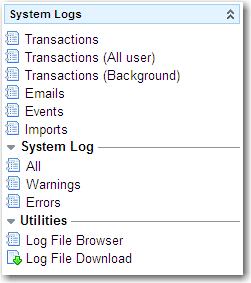

Viewing System Logs
| |
Note: This article applies to Fuji and earlier releases. For more current information, see System Logs at http://docs.servicenow.com
The ServiceNow Wiki is no longer being updated. Visit http://docs.servicenow.com for the latest product documentation. |
Contents
1 Overview
Administrators can use various system logs to view information about system activity.
2 Logged Information
The following information is tracked in the system logs.
- Workflows
- Configuration
- Chats sessions
- Transactions for each view of each page in the system, including load times for network, server, and browser
- Inbound and outbound email
- Events triggered in the system
- Imports and integrations
- System warnings, errors, and script logs
- Upgrade information for any plugin activations, update sets, or system upgrades
2.1 Workflow Logging
The following workflow information is tracked in the system logs.
- Each activity executed, including:
- Date and time started
- Date and time ended
- State, for example, Finished, Cancelled, Timed Out, Error
- Result
- Fault description, if there was an error
- Transition history, including:
- Time of transition
- Activity transitioned from
- Activity transitioned to
- Which transition was triggered
- Workflow log, including any log statements added to the workflow
2.2 Configuration Logging
The following configuration changes are tracked in the system logs.
- Action taken, including insert, update, and delete
- Category of change
- Comments recorded with the change
- Name of the change
- XML difference of the change
- Update set the change is associated to
- Date and time of the change
- User who made the change
- Table where the change was made
- Name of the object being changed
- Type of object being changed
- View the change was made in, for changes to forms or lists
2.3 Log History
The system uses table rotation and table extension to archive older logs. By default, the system uses the following schedule to archive common logs:
| Table | Archive Schedule | Rotations | Type |
|---|---|---|---|
| Event [ecc_event] | Every day | 7 | Rotation |
| Queue [ecc_queue] | Every day | 7 | Rotation |
| Event [sysevent] | Every day | 7 | Rotation |
| Log [syslog] | Every week | 8 | Rotation |
| Transaction Log [syslog_transaction] | Every week | 8 | Rotation |
| Email [sys_email] | Every 30 days | 8 | Extension |
3 Available Logs
|  |
The following logs are available from the System Logs menu.
There are also log utilities provided:
|
{kind=link}
3.1 Transactions
The transaction log records all browser activity for an instance of ServiceNow. This log provides the following information for all activities.
| Field | Description |
|---|---|
| Created | Date and time of the browser action for the locale of the machine running the ServiceNow instance. |
| Created by | The user who created this activity. |
| Message | The user who created this activity. This field is no longer in use with the Calgary release; all user data comes from the Created by field. |
| Response time | Round trip response time for the browser request, in milliseconds |
| Network time | Latency time of the network response after the browser request is made, in milliseconds. |
| Output length | Size of the output string sent by ServiceNow to the browser, in bytes. |
| SQL count | Number of SQL server commands executed for this activity. |
| Business rule count | Number of ServiceNow business rules executed for this activity. |
| Business rule time | Elapsed time for the execution of the ServiceNow business rules for this activity. |
| URL | The application or module connected to by the client browser. |
| System ID | System generated identifier of the client instance making the request. This ID is used for cluster environments in which several instances (nodes) communicate with the database. |
| IP address | IP address of the client making the request. |
| GZipped | Indication of whether a compressed Web page was requested by the browser. |
| Protocol | The HTTP protocol used by the browser for this instance. |
3.1.1 Slow Job Log
The System Scheduler > Slow Job Log module provides a transaction log filtered to show only slow transactions.
3.1.2 Client Transactions
For information on client transaction logging, see Client Transaction Timings.
3.2 Emails
The email log records all email notifications sent from all instances within the ServiceNow system. This is a verbose and unfiltered view of email. For a more detailed view, see the System Mailbox application.
This log provides the following information for all notifications.
| Field | Description |
|---|---|
| Mailbox | The system mailbox to use for filtering the email notifications displayed. |
| State | The current state of the notification (Error, Ignored, Processed, or Ready). |
| Receive type | The type of inbound email notification (None, Forward, New, or Reply). |
| Type |
The status of the email notification. Choices are:
|
| Target | A Document ID reference to the record if the email is generated by an insert, update, or delete of a particular record. |
| User | The name of the user, from the user record, of the ServiceNow instance from which the email notification was sent. Note: This is a string field. |
| Notification Type | The type of notification. Choices are:
|
| UID | The unique ID for the server. |
| Created | The date and time of the email activity for the locale of the machine running the ServiceNow instance. |
| Deleted | An indication of whether the email was deleted from an instance mailbox. |
| Weight | The weight of the email, which determines the sending priority relative to other notifications on the same table. For more information, see Specifying When to Send the Notification. |
| Importance | An indication that the email was sent with a changed level of importance, such as Urgent. |
| Originating Event and Notification | An embedded list that stores the event and notification that initiated the email notification. For more information, see Events and Email Notification. |
| Subject | A configured description of the action that generated the email notification. You create the subject text for notifications in System Policy > Email > Notifications. |
| Error String | The error string captured from the email server to determine why the email was not sent. This is logged only if the email is send-failed. |
| Recipients | The email address of the recipient of each notification. |
| Body | The body of the email, displayed in raw HTML markup. Use the related link Preview HTML Body to see the body text as rendered HTML. |
| Content type | The email content type. |
| Headers | Any headers embedded in the email. |
3.2.1 Outbound Email Notification Recipients
For outbound notifications, the email system log provides reasons that recipients were included or excluded. Each log entry corresponds to a reason for inclusion or exclusion. For example, all users who were excluded because they are inactive appear in a single log entry.
A series of system properties can be used to fine-tune the information to be logged. Two master switch properties, glide.notification.recipient.include_logging and glide.notification.recipient.exclude_logging, control all recipient inclusion and exclusion logging. Several other properties allow you to tailor the information reported in the logs to meet your needs. All of the properties are enabled by default.
{kind=link}
3.3 Events
The event log records all system events that occur within the ServiceNow system. This log provides the following information for all events that occur:
| Field | Description |
|---|---|
| Created | Date and time of the event for the locale of the machine running the ServiceNow instance. |
| Name | Name of the event. You configure events in System Definition > Business Rules. |
| Parm1 | Event-specific value that depends on the event and the recipient. |
| Parm2 | Event-specific value that depends on the event and the recipient. |
| Table | Database table acted on for this event. |
| Processed | Date and time the event was processed This time reflects the locale of the machine running the ServiceNow instance. |
| Processing time | Time taken to process this event, in milliseconds. |
| Queue | Processor queue name. |
3.4 Imports
The import log displays information in a verbose format about any data import activity within the ServiceNow platform. For a more detailed view of the import sets that produced a particular log, see Import Sets > Transform History.
This log provides the following information for all imports:
| Field | Description |
|---|---|
| Created | Date and time of the import for the locale of the machine running the ServiceNow instance. |
| Level | Type of message displayed. For import files, the level is Information. |
| Message | System-generated message regarding the status of the import. |
| Source | Name of the external source of the import, such as an integration. |
3.5 System Logs
System logs display warnings and errors within ServiceNow processes and records, and non-critical events such as memory usage on the ServiceNow server machine. This list view displays the log entries for the current day only. To view other log files, use the log file browser.
This log provides the following information for all occurrences:
| Field | Description |
|---|---|
| Created | Date and time of the logging activity for the locale of the machine running the ServiceNow instance. |
| Level | Type of message displayed. The levels are Debug, Error, Warning, and Information. A warning is an error that has been handled and recovered. An error is something that must be fixed. |
| Message | System-generated message regarding the nature of the occurrence. |
| Source | Name of the process or area affected by the occurrence. For example, the source of the occurrence might be EMAIL or Memory. |
3.6 Logging Utilities
ServiceNow provides the following logging utilities:
- Log file browser
- Log file download
3.6.1 Log File Browser
Use System Logs > Log File Browser to view any system log entry. You can search for log files by using the following filters:
| Field | Description |
|---|---|
| Start time | Start date and time of the range you want to search, for the locale of the machine running the ServiceNow instance |
| Session ID | System-generated hexadecimal string that identifies the session that generated the log entry. |
| End time | End date and time of the range you want to search, for the locale of the machine running the ServiceNow instance |
| Message | System-generated description of the occurrence. |
| Level | Type of message displayed. The levels are Debug, Error, Warning, and Information. A warning is an error that has been handled and recovered. An error is something that must be fixed. |
| Thread name | System-generated identifier of the thread that created the log file. |
| Max rows | Maximum number of records returned for a particular filter. |
3.6.2 Log File Download
ServiceNow creates compressed archives of system logs every two days and purges log archives after 21 days. You can download log file archives and view them with System Logs > Log File Download. Select a log archive from the list, and then click Download log under Related Links to open or save the archive.
4 System Diagnostics Application
The System Diagnostics application provides these logs that relate to the platform:
- Upgrade History: tracks every upgrade to an instance. See Upgrade History.
- Slow Queries: provides insight into how queries affect platform performance. See Slow Query Logs.
5 Customer Updates Table
Every change that is made in the system is recorded on the Customer Updates [sys_update_xml] table chronologically. To navigate to this table, enter sys_update_xml.list into the navigation filter.
The following information is stored about each update:
| Field | Description |
|---|---|
| Name | A name that identifies the updated record. |
| Created | The date and time the customer update record was created. |
| Created By | The user who performed the change. |
| Type | The type of the update. |
| Updated | The date and time the customer update record was updated. |
| Updated By | The user who performed the update. |
| Updates | The number of times the record has been updated. |
| Target Name | The name of the element that was altered. |
| View | the view of the form that was altered if it was a form layout change. |
| Payload | The XML contents of the record after the change. |
| Remote Update Set | A reference to that update set if the change was performed by a remote update set. |
| Local Update Set | The update set the change is associated with. |
For more information, see System Update Sets.
6 System Mailboxes
The System Mailboxes application contains the logs for all of the mail received or sent by the platform. For more information, see System Mailboxes.
7 Audited Tables
If a field on a particular table is audited, all changes to that field are tracked. For more information, see Turning on Auditing (History) for a Table.
This information is kept in two places:
- The History Sets table.
- The Audit table.
For a comparison of the two, see sys_audit versus sys_history_set.
Contents > Administer > Core Configuration > Out-of-Box Appendix
Contents > Administer > Core Configuration > Time
Contents > Administer > Security > Auditing and System Logs